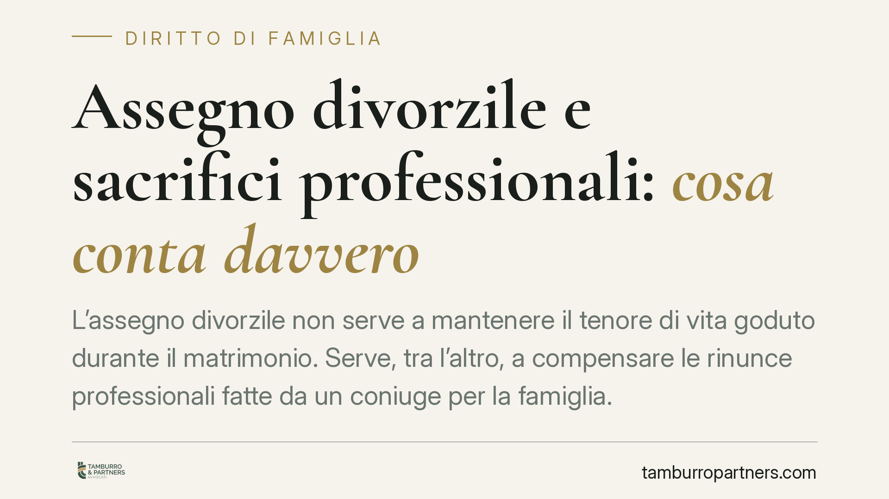

Assegno divorzile e sacrifici professionali: cosa conta davvero
L'assegno divorzile non serve a mantenere il tenore di vita goduto durante il matrimonio. Serve, tra l'altro, a compensare le rinunce professionali fatte da un coniuge per la famiglia. La Cassazione ribadisce questo indirizzo, con una conseguenza pratica precisa: chi chiede l'assegno deve provare il sacrificio e il suo peso economico. Vediamo cosa significa e come muoversi.

Il punto della questione
Un coniuge rinuncia alla carriera, riduce l'orario o lascia il lavoro per occuparsi della casa e dei figli. Al momento del divorzio, quel sacrificio ha un valore economico? La giurisprudenza di legittimità risponde di sì, ma non in modo automatico.
L'assegno divorzile non è un premio, né la prosecuzione del matrimonio in forma di rendita. È uno strumento che, quando ne ricorrono i presupposti, riequilibra le posizioni economiche degli ex coniugi tenendo conto anche di ciò a cui uno dei due ha rinunciato per il progetto familiare comune.
Inquadramento normativo
La disciplina è contenuta nell'art. 5 della L. 1° dicembre 1970, n. 898. La norma indica i criteri di attribuzione e quantificazione: condizioni dei coniugi, ragioni della decisione, contributo personale ed economico dato da ciascuno alla conduzione familiare e alla formazione del patrimonio comune, reddito di entrambi, durata del matrimonio.
Il quadro interpretativo di riferimento resta quello fissato dalle Sezioni Unite della Cassazione con la sentenza n. 18287/2018. Secondo tale indirizzo, l'assegno divorzile ha natura assistenziale e perequativo-compensativa. La funzione assistenziale interviene quando il richiedente non dispone di mezzi adeguati e non può procurarseli; la funzione perequativo-compensativa mira invece a riconoscere il contributo dato alla famiglia e le rinunce compiute, specie nei matrimoni di lunga durata.
Recenti pronunce della Corte hanno confermato questa impostazione, precisando che il parametro non è il tenore di vita matrimoniale, superato dalla giurisprudenza più recente, bensì la valutazione concreta dello squilibrio economico e delle sue cause.
Implicazioni pratiche
Il passaggio decisivo riguarda l'onere della prova, che grava sul coniuge richiedente. Non basta affermare di aver sacrificato la propria carriera: occorre dimostrarlo.
Si tratta di provare due elementi distinti. Primo: che una rinuncia professionale c'è stata davvero (un lavoro lasciato, una promozione non colta, una formazione interrotta). Secondo: che quella rinuncia ha inciso sulla capacità reddituale attuale, generando lo squilibrio economico tra i due. Il collegamento tra scelta e conseguenza va documentato, non presunto.
La distinzione tra affermazione e prova è il cuore di ogni giudizio. Molte richieste falliscono non perché il sacrificio non ci sia stato, ma perché non è stato provato in modo adeguato.
Vale la simmetria opposta per il coniuge economicamente più forte: chi si oppone alla richiesta può contestare l'esistenza del sacrificio, la sua rilevanza causale o l'attuale autosufficienza dell'altro. Anche in questo caso servono elementi concreti.
Un'ulteriore avvertenza riguarda la fase della separazione. L'assegno di mantenimento tra coniugi separati risponde a presupposti in parte diversi da quelli dell'assegno divorzile e conserva un più marcato ancoraggio al pregresso assetto di vita. Chi affronta prima la separazione dovrebbe già impostare, per quanto possibile, la raccolta documentale in vista dell'eventuale divorzio, evitando di ripartire da zero.
Cosa fare in concreto
- Ricostruisci la storia professionale. Raccogli contratti, buste paga, lettere di dimissioni, comunicazioni aziendali che documentino il momento e le ragioni della rinuncia o della riduzione dell'attività.
- Documenta il ruolo familiare. Metti insieme prove del carico di cura assunto: gestione dei figli, trasferimenti seguiti per la famiglia, assenza di sostegno domestico esterno.
- Costruisci il nesso causale. Confronta la posizione professionale precedente al matrimonio, o al momento della scelta, con quella attuale, evidenziando il divario di reddito e di prospettive.
- Fotografa la situazione economica attuale. Predisponi dichiarazioni dei redditi, estratti conto, documentazione patrimoniale di entrambi i coniugi, per rappresentare lo squilibrio in modo verificabile.
- Non attendere il divorzio per organizzare le prove. Consigliamo di iniziare la raccolta già in fase di separazione, quando i documenti sono più facilmente reperibili.
In sintesi
L'assegno divorzile può compensare i sacrifici professionali, ma solo se questi vengono provati e collegati allo squilibrio economico presente. Il diritto non nasce dall'affermazione, ma dalla dimostrazione. Impostare per tempo la documentazione è, oggi, la scelta più efficace per chi intende far valere le proprie ragioni o difendersi da una pretesa infondata.
Contributo informativo a cura di Tamburro & Partners - Avv. Giuseppe Tamburro. Non costituisce parere legale.
Ogni famiglia ha il suo equilibrio.
Separazione, divorzio, affidamento, assegno: se vuoi un confronto riservato su una specifica situazione, scrivi allo studio. Ti rispondiamo entro un giorno lavorativo.